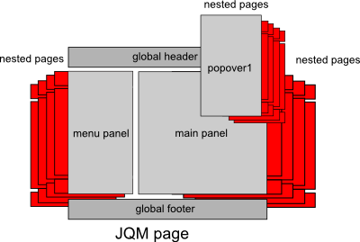
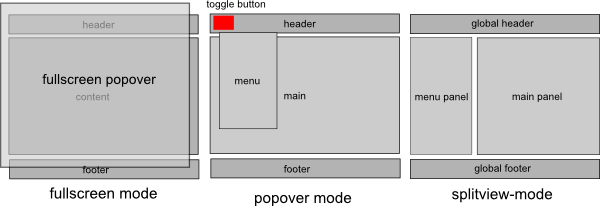

Main Section
Load some content here...
Welcome to the Demo!
The plugin creates three screen modes
Pick one to learn more or check them out in the demo
Links to all layout and feature demo pages
the following changes have been made to JQM to make the plugin work
Load some content here...
Create a normal JQM page and add the trigger element data-wrapper="true" to the page. This will fire the plugin when the page loads.
If your app has several independent JQM pages (no multipage), make sure to include the plugin script, css plus the modified JQM file on every page!
The page above will be your wrapper-page. Header and Footer in this page will your global header/footer.
Any popover panels you want to add will go after the content section of this page. If you want to create a multipage or splitscreen page, remove the content section and just put panels inside the wrapper. See the demos for details
Panels need to be div tags. To specify a panel you need to add the following attributes:
data-role="panel" - indicating this is a paneldata-id="your_panel_name" - a unique name to differentiate panelsdata-panel="type" - can bei either popover, menu, main, fullwidthdata-hash="history/crumbs" (optional) - whether the panel should have an active history alongside JQM and browserdata-autoshow="once" (optional) - whether to show the panel the first time this page is loaded to the DOMPanels itself can contain any number of nested JQM pages. All headers/footers in these pages will be local (can be fixed, too). Make sure to
include a data-show="first" attribute to the default page for each panel. Otherwise the panel will be black when it's opened or a page loads.
The plugin tweaks JQM navigation. The main differences are:
$.mobile.pageContainer - allows page container to be changed to either body or panelsdata-target="panel-id" - needs to be attached to every panel-link. Omitting this will break the layout as JQM will take overpageContainer: $(panel-id) - needs to be included, when calling panel transitions programmaticallyUse the plugin to create the following layouts:
Popover panels can be used on normal JQM pages and panel pages alike. The basics of the popover are set by the .ui-popover class, while
size and position of the popover can be set individually (demo uses .ui-popover1, .ui-popver2

A few things to be beware of when setting up a popover:
.ui-element-fixed-top or .ui-element-fixed-bottom to the popover.ui-triangle-top or .ui-triangle-bottom for small indicator triangles.ui-popover-centerdata-autoshow="once" on the panel will show the it once when the page is added to the DOM (login window)data-hash="history" will add this panel to the plugin history enableing back/fwd button on browser/mobiledata-hash="crumbs" will also add back button on every page (currently both history/crumbs are avtive!)Some rules for popovers:
If you use a fullwidth background panel, you can set up your loadable multipage layout. Just drop all nested pages inside the fullwidth panel and
don't forget to link using data-target="your_panel_id". Since the panel is inside a single wrapper page, this will be loaded by JQM
along with all nested pages. As a bonus, specifying header or footer outside of the panel makes them global across all pages. Dropping them inside
on nested pages makes them local.

A few things to be beware of when setting up a fullwidth panel:
data-hash="history" will add this panel to the plugin history enableing back/fwd button on browser/mobiledata-hash="crumbs" will also add back button on every page (currently both history/crumbs are avtive!)To setup a splitview layout, just replace the content section with two panels, main and menu. Like in a fullwidth setup, any header/footer dropped inside the wrapper page but outside of the panels will be your global header/footer across all nested pages, while headers/footers inside nested pages will be local.

A few things to be beware of when setting up a main/menu panel:
menuWidth and menuMinWidthswitchable: true, the menu can also be toggled in splitview-modeswitchableIcon and switchableHideOnLoad options to further modify the button.ui-menu-button-flex to the designated element. The menu button will be dropped there.data-hash="history" will add this panel to the plugin history enableing back/fwd button on browser/mobiledata-hash="crumbs" will also add back button on every page (currently both history/crumbs are avtive!)Some rules for menu/main panels:
You can mix background panels with popovers as you like, so a menu/main layout with one or more popovers is no problem at all. You can also mix splitview pages together with regular JQM pages to create larger web apps. The plugin always works across the DOM, so you can add a lot of complexity to apps with little effort.
A few things to be beware of when setting up a main/menu panel:
The plugin offers three layout modes, which are running automatically:
Currently fullscreen mode fires if screen width is less than 320px. Below this threshold, all popovers loose class .ui-popover, which
drops all formatting (borders,etc.). New class ui-fullscreen overwrites all dimensions to 100% and positions the popover absolute (vs. static) in other screen modes.
Popover mode fires above 320px and below 768px or in portrait mode. If you are using a menu/main layout the menu will be hidden and changed into a regular
popover, which can be toggled using a menu toggle button.

A few things to be beware in popover mode:
.ui-menu-button-flex to the element that should hold the button (think of a listview filter with editable options in the menuIn Landscape mode or above screen width of 768px, splitview mode fires enabling menu und main panels to sit side by side.
A few things to be beware in splitview mode:
switchable:true when calling the plugin. This also adds the menu toggle button in splitview modePlease select a feature from the menu!
The plugin adapts uses different modes to change the layout depending on "available space". Especially if multiple panels are used, this requires some contraints to be able to have a clean navigation across different size devices.
To see how this works, load any of the layout demos, resize the screen and refresh, change orientation or load the page on a mobile device.
above ????px width) for webTV with increased button padding, no vertical scrolling etc)Since the plugin sits inside a regular JQM wrapper page and only the content is changing, the plugin offers global header and footer by default. Both can be ommitted or replaced with local header/footers sitting inside each page.
Use any of the below demo pages to check out the different header/footer options
Use any of the below demo pages to check out how fixed elements reposition when scrolling
Context loading allows to load a page in one panel and fire another transition in another panel. To use the context-loader simply
add two more attributes to a link. data-context="pageID" is denotes the context page to be loaded and data-context-panel="panelID" indicates
into which panel this page should go.
Check the below demo page to see how context loading works.
Deeplinking is possible, as every page you visit inside the wrapper page has it's own id, which will update the URL. only works for pages that are on board when the wrapper loads. External pages will be added to the respective panel, but just from a deeplink, there
is no info on which panel the page should be loaded into, whereas existing pages can be searched in the DOM.
Check the below deeplinks to see how it works. The last links will try to load a page, which is not on board demos_deeplink.html, when the page loads.
Loading external pages into any panel is tricky, because a lot of stuff changes in JQM, which potentially breaks the plugin. Currently loading pages into a panel more or less works. Panel history and deeplinking need finetuning.
Click the link below to load an empty combo layout which adds all pages on click.
The plugin comes with it's own history routine which can be acitvated for each panel by assinging either data-hash="history" or
data-hash="crumbs". Currently both are firing together and register every panel transition, so clicking crumbs back-buttons or the browser back button
allows to navigate back through the multiview page. To make this work, every panel gets a history stack which is set at the initially displayed page. On every transition
the stack is increased by a single entry (page ID). Menu and main panel always increase together, with the passive increase getting an entry named "yield". When the user
clicks a back button the plugin checks all panels if a) a popover is open (always goes down first, as they close and reset when the user leaves them) and b) which panel has the highest stack.
This way popover are returned back to base, after that, main/menu/fullwidth panel and once all panels are back at base level, JQM takes over again.
Click the link below to see this in action
Popovers can be shown by specifying data-autoshow="once" on the panel. This attribute triggers a panel toggle when the page loaded and
is removed afterwards.
Click the link below to see this in action
AutoshowTo hide/show a menu in splitview mode (same as in popover mode), the option: switchable: true has to be added to the plugin call. Additional options
also include, which icon to use for the menu toggle button switchableIcon:'icon' and whether to show the menu panel when the page is loaded switchableHideOnLoad:true.
Click the link below to see this in action
Toggle MenuClick any of the buttons to load a new page with the respective DEMO into the DOM.
Some changes have been made to JQM to make the plugin work. Most of this could probably be relocated to inside the plugin. The plugin itself also has some sections of duplicate code, where JQM stuff wasn't accessible from outside.